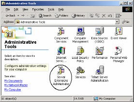

6 Mengatur Frontpage Extensions Server
Sekarang Anda telah memiliki web server IIS versi 5 pada komputer Anda,
selanjutnya kita perlu mengatur Frontpage Extensions Server agar server lebih
canggih. Langkah yang diperlukan adalah:
1. Aktifkan Control Panel.
Gambar 1.32 Control Panel
2. Klik ganda icon Administratif Tool, lihat Gambar 1.32 di atas. Muncul
Administratif Tool, lihat Gambar 1.33.

Gambar 1.33 Administratif Tool
3. Klik ganda icon Server Extensions Administrator. Gambar 1.33. Muncul
Server Extensions Administrator. Gambar 1.34.
Gambar 1.34 Server Extensions Administrator
4. Klik kanan icon master (nama komputer Anda, sekaligus server web Anda) dan
klik perintah New è Web, muncul Server Extensions Configuration Wizard.
5. Klik Next, muncul pemberitahuan. Klik Yes, muncul penentuan alamat e-mail.
Gambar 1.36 Penentuan alamat e-mail
6. Untuk saat ini , klik pilihan kedua, lalu Next. Muncul kotak dialog pemilihan
Mail server. Untuk saat ini, klik pilihan kedia, No, I’ll do it later. lalu klik
tombol Next. Proses konfigurasi dijalankan.
7. Setelah selesai, muncul status selesai. Klik Finish. Selesailah sudah, hasilnya akan
seperti Gambar berikut ini:
Gambar 1.38 Hasil konfigurasi
Copyright © Herlan Lesmana
Created with the Freeware Edition of HelpNDoc: Easy to use tool to create HTML Help files and Help web sites